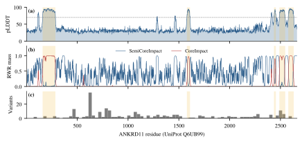
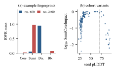
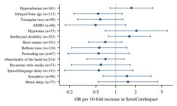

KBG syndrome (OMIM 148050) is characterised by macrodontia of the upper central incisors, distinctive craniofacial features, short stature, skeletal anomalies and developmental delay or intellectual disability. It is caused by heterozygous loss-of-function variants in ANKRD11 or by 16q24.3 deletions that include the gene [1,2]. ANKRD11 is a large chromatin regulator. Apart from an N-terminal ankyrin-repeat domain and short C-terminal segments, it has few well-folded regions. Large cohort studies have described broad clinical variability and only modest genotype–phenotype correlations [3].
AlphaFold [4] and the AlphaFold Protein Structure Database [5] now provide a predicted structure for essentially every human protein, together with a per-residue confidence score (pLDDT). pLDDT tracks local order closely: residues below about 50 are a strong indicator of intrinsic disorder [6,7]. This makes it possible to place every patient variant in structural context, even for proteins that have no experimental structure. The question we address is practical. Can a simple, transparent structural feature computed from an AlphaFold model separate patients by phenotype within a single-gene cohort?
We borrow ideas from two areas. Residue contact networks built from Cα coordinates underpin elastic-network models of protein dynamics [8], and random walks with restart (RWR) are a standard way to propagate a local signal through a network [9,10]. PhenoBridge combines the two. We seed a walk at the variant residue on the contact graph and summarise where the probability mass settles, measured against regions defined by pLDDT. Our contributions are: (i) an interpretable four-component fingerprint for any residue; (ii) an open, end-to-end pipeline from a phenopacket-style cohort file to per-HPO association statistics and an interactive prediction interface; and (iii) a candid evaluation on 333 KBG individuals, including how sensitive the result is to the coding of missing phenotype data.
Structure. We used the AlphaFold DB model AF-Q6UB99-F1 (v6) for human ANKRD11 (UniProt Q6UB99, 2,663 residues). AlphaFold stores per-residue pLDDT in the B-factor column. PDB numbering matches UniProt numbering, so cohort positions map directly onto residues.
Cohort. The cohort file (ANKRD11_KBGS_individuals.json) contains 333 individuals with a KBG syndrome diagnosis, curated from the literature, primarily the 340-patient series of Martinez-Cayuelas et al. [3]. Each individual is annotated against 48 HPO terms [11] as observed, excluded or not available, and carries one ANKRD11 allele (transcript NM_013275.6). There are 232 distinct alleles: 77 individuals carry structural variants (16q24.3 deletions), and the remainder carry sequence variants given as cDNA HGVS. Phenotype annotation is sparse: the median HPO term is unrecorded for 70.7% of individuals (maximum 99.1%).
Let xi be the Cα coordinate of residue i. The contact graph G = (V, E) has one node per residue and an undirected edge whenever ‖xi − xj‖ ≤ r, with r = 8 Å by default. Edges are found with a k-d tree. Sequence neighbours (≈3.8 Å apart) are always connected, so G contains the chain as a path plus the spatial contacts. Residues are split by the empirical pLDDT quantiles q0.9 and q0.5: Core (pLDDT ≥ q0.9), Semi-core (q0.5 ≤ pLDDT < q0.9) and Disorder (pLDDT ≤ q0.5). We use quantiles rather than fixed thresholds because they adapt to proteins of different overall confidence.
To mark residues that may relay signals between distant domains, we build a second graph Gcore restricted to residues with pLDDT ≥ 70. We then sample up to 2,000 source–target pairs between an N-terminal anchor (residues 1–200) and a C-terminal anchor (the last 200 residues). For each pair we compute the shortest path and count how often each interior node is visited. The 200 most frequently visited nodes form the communication backbone B.
Let A be the adjacency matrix of G and D its degree matrix. For a variant at residue s, let es be the indicator vector of s. We iterate
until the change in ℓ1 norm falls below 10−10 (or 200 iterations), with restart probability α = 0.3. The fixed point p∞ is a personalised-PageRank profile centred on s [9]. For each region R ∈ {Core, Semi-core, Disorder, B} the fingerprint component is
The three pLDDT regions partition V, so their components sum to one, and FB overlaps them. Because the walk restarts at the seed, the fingerprint describes the variant's local neighbourhood within a radius set by α. FSemi is high for residues embedded in partially ordered structure and low both for residues in long disordered linkers and for residues deep inside the confident core.
Protein positions are read from p. notation when it is present. Otherwise they are computed as ⌈c/3⌉ from the first cDNA coordinate. Alleles whose HGVS string contains del, dup, ins, fs, ter/* or splice are flagged as truncating-like (T ∈ {0,1}). For each individual we take the maximum FSemi across their alleles. For every HPO term h whose observed and excluded counts were each at least 15, we fit
and report the odds ratio exp(β1) per 10-fold increase in FSemi, Wald 95% confidence intervals, and Benjamini–Hochberg q-values [12]. We compare two ways of coding phenotypes. In Encoding A, used by our hackathon prototype, unannotated terms are treated as absent. In Encoding B, each model uses only individuals for whom the term was explicitly recorded as observed or excluded. Structural variants have no single residue position and are excluded from the association analysis.
PhenoBridge is a single Python module built on Biopython [13], NetworkX [14], SciPy and statsmodels [15]. A Gradio interface exposes three functions: computing the fingerprint for a residue, comparing two residues side by side, and producing a top-10 table of predicted phenotype probabilities for user-entered variants, with a badge on terms whose cohort-level p < 0.05. A fingerprint takes about 0.06 s per residue on one CPU core, or about 2.5 min for the whole protein.
pLDDT has a median of 31.2 and a mean of 39.2. 83.8% of residues fall below 50, and only 12.3% reach 70 or above (Fig. 1a). The confident residues cluster in an N-terminal segment (159–285), consistent with the annotated ankyrin-repeat domain, and in a short internal segment and three C-terminal segments. With the quantile thresholds (q0.9 = 81.2, q0.5 = 31.2), there are 268 Core, 1,066 Semi-core and 1,332 Disorder residues. The full contact graph has 2,663 nodes and 6,911 edges. The high-confidence graph Gcore (327 nodes, 1,354 edges) splits into 10 connected components, so the backbone B (200 nodes, spanning residues 112–2442) runs through the largest connected confident regions rather than forming one continuous path from N- to C-terminus.
| Quantity | Value |
|---|---|
| Residues / contact edges (r = 8 Å) | 2,663 / 6,911 |
| Residues with pLDDT ≥ 70 / < 50 | 12.3% / 83.8% |
| Core / Semi-core / Disorder residues | 268 / 1,066 / 1,332 |
| Individuals / HPO terms / distinct alleles | 333 / 48 / 232 |
| Structural variants (no residue position) | 77 |
| Individuals mapped / distinct positions | 256 / 153 |
| Truncating-like among mapped | 69.5% |
| Median HPO missingness | 70.7% |
| Seeds with pLDDT < 50 / ≥ 70 | 84.0% / 31 indiv. |
| FSemi median (IQR), cohort | 0.29 (0.16–0.57) |
| Spearman ρ vs. default: α = 0.15 / 0.5 | 0.988 / 0.998 |
| Spearman ρ vs. default: r = 6 / 10 Å | 0.986 / 0.992 |
Fig. 1b shows that FSemi varies sharply along the sequence. It is close to zero in long disordered stretches and close to one in the C-terminal third, where moderate-confidence regions are dense. FCore is concentrated almost entirely in the confident segments. Fig. 2a compares the two default residues of the interactive tool. Residue 600 (pLDDT 27.5) keeps 94.7% of its walk mass in disorder (FSemi = 0.053). Residue 2400 (pLDDT 49.4) sends 97.2% to the semi-core and 7.7% to the backbone. Across the 153 cohort positions, the ranking of FSemi barely changes when α is halved or raised to 0.5, or when the contact cutoff is set to 6 or 10 Å (ρ ≥ 0.986; Table 1). The fingerprint is therefore a stable property of the structure, not an artefact of the parameter choices.

Most cohort variants are poorly resolved structurally. 84.0% of mapped individuals carry a variant at a residue with pLDDT < 50, and only 31 carry one in a segment with pLDDT ≥ 70 (Fig. 2b). Variants cluster around residues 530–670, 800–930 and 2400–2530 (Fig. 1c). Only the last of these clusters lies in a region with high FSemi.
Under Encoding A, 31 HPO terms met the prevalence filter. Two reached nominal significance: attention-deficit/hyperactivity disorder (OR 0.53, 95% CI 0.31–0.93, p = 0.026) and triangular face (OR 0.59, 0.35–0.99, p = 0.048). Neither survived FDR correction (minimum q = 0.60). Under Encoding B, the number of individuals per model fell from 256 to between 41 and 214. None of the 30 tested terms reached nominal significance. The smallest p-value was 0.15 (hypertelorism, OR 1.73, 0.82–3.65) and the minimum q was 0.83 (Table 2, Fig. 3). For intellectual disability, the core neurodevelopmental feature, the point estimate was above one (OR 1.61, 0.77–3.35), but the interval was wide and included one.

| HPO term | Enc. A (n=256) | Enc. B (explicit only) | |||
|---|---|---|---|---|---|
| OR | p | n | OR | p | |
| ADHD | 0.53 | 0.026 | 68 | 0.49 | 0.19 |
| Triangular face | 0.59 | 0.048 | 99 | 0.58 | 0.18 |
| Intellectual disability | 0.96 | 0.86 | 183 | 1.61 | 0.20 |
| Hypertelorism | 1.31 | 0.36 | 101 | 1.73 | 0.15 |
| Terms tested / p < 0.05 / min q | 31 / 2 / 0.60 | 30 / 0 / 0.83 | |||
PhenoBridge yields a structural descriptor that is reproducible, cheap to compute and easy to read. In this cohort, however, that descriptor does not explain phenotypic variability among KBG patients. We see three reasons, and each points to a direction for future work.
Structural signal is limited. Most pathogenic ANKRD11 variants are truncating and lie in disordered regions. For these variants, haploinsufficiency through nonsense-mediated decay probably matters more than local 3D context, and a contact graph built from low-confidence coordinates mostly encodes chain connectivity. Fingerprints are likely to be more informative for missense variants in the confident C-terminal segments. Testing that subset needs a larger cohort than the 31 individuals available here.
Missing data shape the conclusions. Treating unrecorded terms as absent (Encoding A) produced nominal hits that disappeared when only explicit annotations were used. Literature-curated cohorts typically report a phenotype only when it was examined, so absence of a record is not evidence of absence. We recommend Encoding B, or an explicit missing-data model, as the default for this kind of analysis.
Model choices. Our variant-class flag is a string heuristic. It labels in-frame indels as truncating and misses single-nucleotide nonsense changes. A proper consequence annotation, for example from VEP, would remove this confound. Taking the maximum over alleles per individual is trivial here because each individual has one allele, but it would need revisiting for compound or mosaic cases. Finally, the per-term models are small and the 30 tests are correlated. Multivariate approaches such as phenotype-similarity scores or penalised multi-label models may recover a weak shared signal that individual tests cannot.
Outlook. The fingerprint does not depend on the gene. Applying it to rare-disease genes whose structures are better resolved, combining it with conservation and missense-pathogenicity scores, and weighting edges by predicted aligned error (PAE) instead of thresholded Cα distances are natural next steps.
We introduced PhenoBridge, an interpretable pipeline that links AlphaFold-derived structural context to patient phenotypes through confidence-aware random-walk fingerprints. The fingerprints are robust to parameter choices. In a 333-patient KBG syndrome cohort they show no phenotype association that survives multiple-testing correction. This negative result is informative: it shows that most ANKRD11 variants fall in disorder, and that phenotype missingness can create spurious associations. Code, data and an interactive interface are available in the project repository.
Acknowledgements. This work began as a hackathon project. We thank the curators of the KBG syndrome cohort and the AlphaFold DB team for making their data openly available.